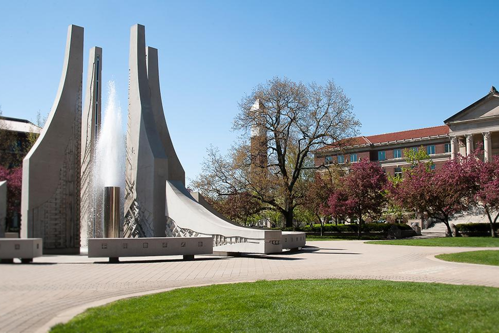
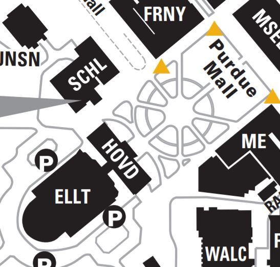
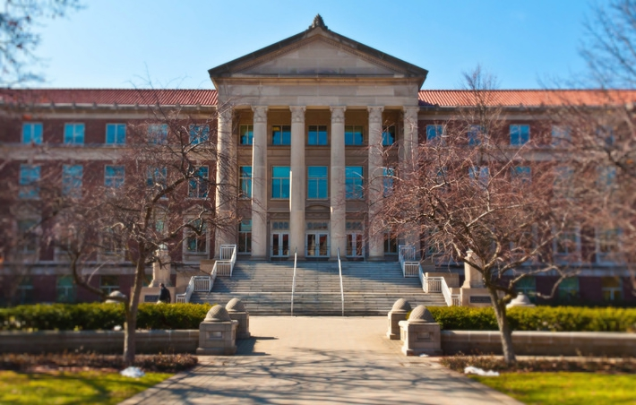
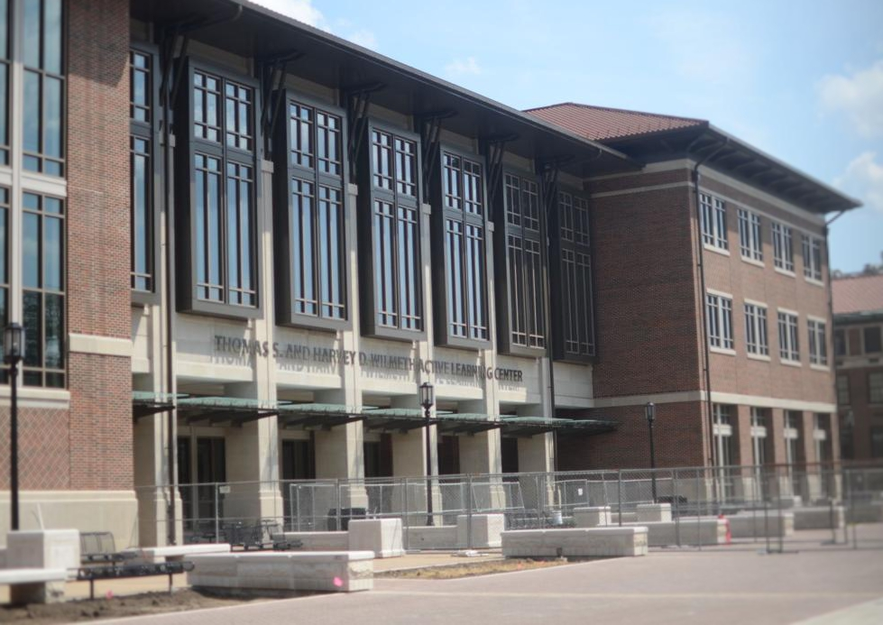

The Answer Was: Engineering Fountain!
   O
The Purdue Mall Water Sculpture is one of Purdue’s biggest fountains, and this one is located at the heart of Purdue Mall. Because of its proximity to engineering-related buildings, it has been nicknamed the Engineering Fountain. On hot days, many students can be seen running through it to cool off.
Next!